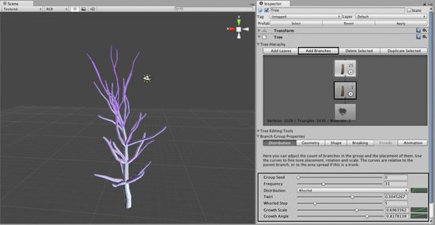
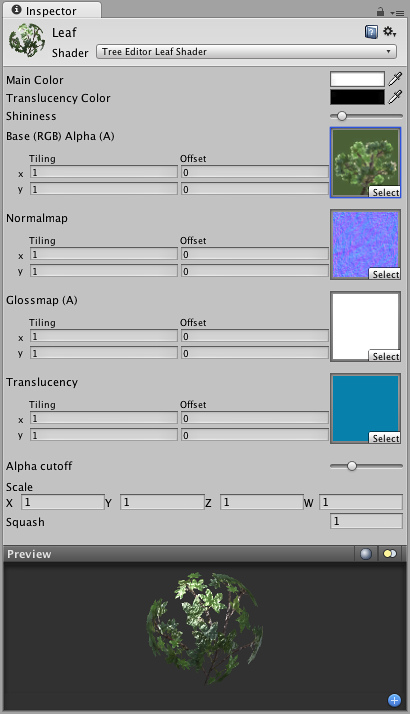
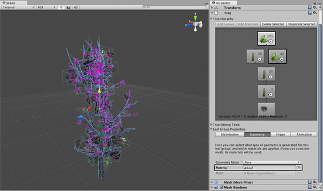
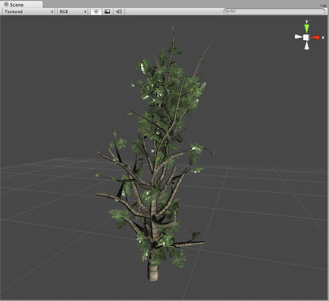

Building Your First Tree
We'll now walk you through the creation of your first Tree Creator Tree in Unity. First, make sure you have included the tree creator package in your project. If you don't, select , navigate to your Unity installation folder, and open the folder named Standard Packages. Select the Tree Creator.unityPackage package to get the needed assets into your project.
Adding a new Tree
To create a new Tree asset, select .

You'll see a new Tree asset is created in your Project View, and instantiated in the currently open Scene. This new Tree is very basic with only a single branch, so let's add some character to it.
Adding Branches

A brand new tree in your scene
Select the tree to view the Tree Creator in the Inspector. This interface provides all the tools for shaping and sculpting your trees. You will see the Tree Hierarchy with two nodes present: the Tree Root node and a single Branch Group node, which we'll call the trunk of the tree.
In the Tree Hierarchy, select the Branch Group, which acts as the trunk of the tree. Click on the Add Branch Group button and you'll see a new Branch Group appear connected to the Main Branch. Now you can play with the settings in the Branch Group Properties to see alterations of the branches attached to the tree trunk.

Adding branches to the tree trunk.
Adding branches to the tree trunk.
After creating the branches that are attached to the trunk, we can now add smaller twigs to the newly created branches by attaching another Branch Group node. Select the secondary Branch Group and click the Add Branch Group button again. Tweak the values of this group to create more branches that are attached to the secondary branches.

Adding branches to the secondary branches.
Now the tree's branch structure is in place. Our game doesn't take place in the winter time, so we should also add some Leaves to the different branches, right?
Adding Leaves
We decorate our tree with leaves by adding Leaf Groups, which basically work the same as the Branch groups we've already used. Select your secondary Branch Group node and then click the Add Leaf Group button. If you're really hardcore, you can add another leaf group to the tiniest branches on the tree as well.

Leaves added to the secondary and smallest branches
Right now the leaves are rendered as opaque planes. This is because we want to adjust the leaves' values (size, position, rotation, etc.) before we add a material to them. Tweak the Leaf values until you find some settings you like.
Adding Materials
In order to make our tree realistic looking, we need to apply Materials for the branches and the leaves. Create a new Material in your project using ^Assets->Create->MaterialNature->Tree Creator Bark^^ from the Shader drop-down. From here you can assign the Textures provided in the Tree Creator Package to the Base, Normalmap, and Gloss properties of the Bark Material. We recommend using the texture "BigTree_bark_diffuse" for the Base and Gloss properties, and "BigTree_bark_normal" for the Normalmap property.
Now we'll follow the same steps for creating a Leaf Material. Create a new Material and assign the shader as . Assign the texture slots with the leaf textures from the Tree Creator Package.

Material for the Leaves
Material for the Leaves
When both Materials are created, we'll assign them to the different Group Nodes of the Tree. Select your Tree and click any Branch or Leaf node, then expand the Geometry section of the Branch Group Properties. You will see a Material assignment slot for the type of node you've selected. Assign the relevant Material you created and view the results.

Setting the leaves material
Setting the leaves material
To finish off the tree, assign your Materials to all the Branch and Leaf Group nodes in the Tree. Now you're ready to put your first tree into a game!

Tree with materials on leaves and branches.
Tree with materials on leaves and branches.
Hints.
- Creating trees is a trial and error process.
- Don't create too many leaves/branches as this can affect the performance of your game.
- Check the alpha maps guide for creating custom leaves.
Page last updated: 2011-10-29